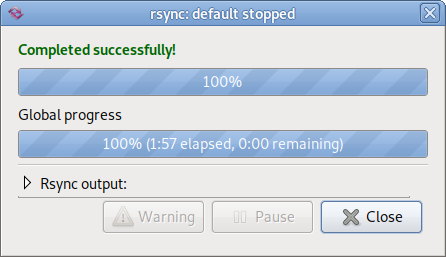

| HOME / Software | Last updated: 2022/04/21 11:58 JST |
システムツール
- Point-and-Klik (KNOPPIX 3.7)
- Up2Date Network (アップ2デート)
- YUM コマンドの便利な使い方 (--enablerepo= オプション)
- アップロード / ダウンロードソフト（転送ソフト）
- ダウンロードソフト（転送ソフト）/ 自動巡回ツール
- Grsync（rsync 用 GTK+ フロントエンド）
- (GRUB / Lilo) 起動する順番を変更したいとき
ターミナル・エミュレータ (terminal emulator)
GNOME 端末 (Gnome-terminal) の概要について
GNOME 端末のヘルプに収録のマニュアル V2.3 日本語版より引用
[概要]
GNOME 端末 は、次のアクションに使用できる端末エミュレーションアプリケーションです。
- GNOME 環境で UNIX シェルにアクセスする
シェルは、コマンドラインプロンプトに入力されたコマンドを解釈して実行するプログラムです。 GNOME 端末 を起動すると、システムアカウントで指定されたデフォルトのシェルが起動します。いつでも別のシェルに切り替えられます。
- VT102、VT220、および xterm 端末用の任意のアプリケーションを実行する
GNOME 端末 は、X Consortium が開発した xterm プログラムをエミュレートします。xterm プログラムは DEC VT102 端末をエミュレートし、さらに DEC VT220 のエスケープシーケンスをサポートします。エスケープシーケンスは、Esc 文字から始まる一連の文字です。 GNOME 端末は、VT102 および VT220 端末がカーソルの位置づけ、画面消去などの機能に使用するすべてのエスケープシーケンスを受け付けます。
Description: The GNOME 2 terminal emulator application
GNOME Terminal is a terminal emulation application that you can use to perform the following actions:
.
To access a UNIX shell in the GNOME environment.
.
To run any application that is designed to run on VT102, VT220, and xterm terminals.
GNOME 端末の便利な使用法 -履歴機能
GNOME 端末で最近実行したコマンドは、履歴として記憶されています。このため、長い文字列のコマンドを再実行したり、その一部を変更／訂正した いときに活用すると便利です。
履歴表示は、矢印キー ↑ を押下します。複数回押下すれば、より古い履歴が表示できます。元に戻るには ↓ キーを押します。
Xterm の概要について
Description: X terminal emulator
(from apt-cache show xterm in Debian 3.1)
xterm is a terminal emulator for the X Window System. It provides DEC VT102 and Tektronix 4014 compatible terminals for programs that cannot use the window system directly. This version implements ISO/ANSI colors and most of the control sequences used by DEC VT220 terminals.
.
This package provides four commands: xterm, which is the traditional terminal emulator; uxterm, which is a wrapper around xterm that is intelligent about locale settings (especially those which use the UTF-8 character encoding), but which requires the luit program from the xutils package; koi8rxterm, a wrapper similar to uxterm for locales that use the KOI8-R character set; and lxterm, a simple wrapper that chooses which of the previous commands to execute based on the user's locale settings.
.
A complete list of control sequences supported by the X terminal emulator is provided in /usr/share/doc/xterm.
.
The xterm program uses bitmap images provided by the xlibs-data package.
.
Those interested in using koi8rxterm will likely want to install the xfonts-cyrillic package as well.
「そのようなファイルやディレクトリはありません」と出る。
フォルダ名が不適切だと、コマンドラインから操作した時そのメッセージが表示されます。特に、文字列の途中に空白（スペース）を設 けてはいけません （下例）。
$ cd hoge 123
bash: cd: hoge: そのようなファイルやディレクトリはありません
この場合、途中の空白を削除します。
hoge123
Point-and-Klik (KNOPPIX 3.7)
- Point-and-Klik については、SoftWares/PointKlik を見てください。
Up2Date Network (アップ2デート)
- アップ2デート (Up2Date Network) の作業手順については、Up2DateNetwork を見てください。
YUM コマンドの便利な使い方 (--enablerepo= オプション)
このコマンド・オプションは、設定ファイルで通常、無効(コメントアウト)にしてあるリポジトリをその時に限り利用可能とするオプ
ションです。
CentOS の場合では、centosplus がデフォルトで無効であるため、次のように利用します。ただし、yum 2.2.2
では --enablerepo= オプションは使えません。*1 yum 2.4.2
以上で利用可能です。
# yum --enablerepo=centosplus install kernel
このオプションで、V4Lサポートの kernel.i686 0:2.6.9-22.0.1.106.unsupported がインストールできます。
Fedora Extras を利用したいときにも、通常、無効として設定(enabled=0)しておく方が実際には便利です。追加パッケージをインストールしたい 時だけ、 --enablerepo= オプションで Fedora Extras を有効にすることができます（下例参考）。
[fedora-extras]
name=Fedora Extras - $releasever - $basearch
baseurl=http://MIRROR-Server/fedora/linux/extras/3/$basearch/
enabled=0
gpgcheck=1
gpgkey=http://MIRROR-Server/fedora/linux/extras/RPM-GPG-KEY-Fedora-Extras
アップロード / ダウンロードソフト（転送ソフト）
gFTP を再インストールするには？
何らかの事情で再インストールする場合には、パッケージ管理ツールで gftp を削除するだけでは不十分です。ユーザーディレクトリに存在する .gftp フォルダを手動で削除する必要があります。このフォルダには、以下のファイルが含まれます。
bookmarks
gftp.log
gftprc
ダウンロードソフト（転送ソフト）/ 自動巡回ツール
Aria - yet another download tool
グラフィカルなダウンロードツール。HTTPと ftpをサポート。
http://aria.rednoah.com/linux_j.shtml
Debian の場合、公式パッケージに含まれるのでインストールは簡単です。
# apt-get install aria
パッケージリストを読みこんでいます... 完了
依存関係ツリーを作成しています... 完了
以下のパッケージが新たにインストールされます:
aria
アップグレード: 0 個、新規インストール: 1 個、削除: 0 個、保留: 0 個。
681kB のアーカイブを取得する必要があります。
展開後に追加で 2056kB のディスク容量が消費されます。
取得:1 http://ftp.jp.debian.org stable/main aria 1.0.0-9.0.1 [681kB]
681kB を 1s で取得しました (345kB/s)
未選択パッケージ aria を選択しています。
(データベースを読み込んでいます... 現在 113104 個のファイルとディレクトリがイン ストールされています。)
(.../aria_1.0.0-9.0.1_i386.deb から) aria を展開しています...
aria (1.0.0-9.0.1) を設定しています ...
$ aria
Wget
Webサーバ・FTPサーバから指定ファイルをダウンロードするテキストベースツール
- Wgetを使おう的ページ
http://www.geocities.jp/horiuchimasaru/wget.html
GNU Wgetの使い方が日本語でやさしく書かかれています。
使い方の詳細（オプション）は次で確認できます。$ wget -h
- 再帰ダウンロードについて
実行コマンドの例：$ wget -r -l 1 -np -nc [URL]
再帰ダウンロードの詳細と注意事項については、こちらを参照してください。
Gwget
上記項目で紹介した、ファイル・ダウンロード・ソフト wget の GUIフロントエンド。
Gwget（Download Manager for GNOME）
- Fedora Core
# yum install gwget - Debian Linux
# apt-get install gwget
使い方は、wget コマンドをGUIで使うにはが参考になります。
Grsync（rsync 用 GTK+ フロントエンド）
インストール方法
Debian 10 の例：パッケージ: grsync (1.2.6-2)をインストールします。
# apt install grsync
パッケージリストを読み込んでいます... 完了
依存関係ツリーを作成していま
す
状態情報を読み取っています... 完了
以下の追加パッケージがインストールされます:
ssh-askpass
以下のパッケージが新たにインストールされます:
grsync ssh-askpass
アップグレード: 0 個、新規インストール: 2 個、削除: 0 個、保留: 0 個。
175 kB のアーカイブを取得する必要があります。
この操作後に追加で 720 kB のディスク容量が消費されます。
続行しますか? [Y/n]
Grsync は rsync コマンドラインプログラムへの GTK2 を使ったシンプルな GUI です。現在 rsync
の最も重要な機能セットのみしかサポートしていませんが、 ローカルディレクトリの効率的な同期の実行に利用できます。 - https://packages.debian.org/ja/buster/grsync
起動方法
インストール後、デスクトップのメニューへ自動的に登録されるので、メニュー > アプリケーション > システムツール > Grsync より起動します。
- smbmountとgrsyncを使った簡単バックアップ https://mag.osdn.jp/07/08/06/0135239
- Grsyncでバックアップ https://ameblo.jp/miyou55mane/entry-12219419408.html
rsync について
「rsync」は、リモート環境とファイルやディレクトリを「同期（sync）する」というコマンドです。ローカル環境のみでも使用でき ま す。「変更があった分だけ更新する」という機能があるので、ディレクトリ単位のバックアップで特に便利に使えます。[引用元]- https://www.atmarkit.co.jp/ait/articles/1702/02/news031.htmlrsync をコマンドラインで実行する場合、次のような書式に従います。この例は PC 本体内のデータを接続先の USBメモリへ転送する場合です。 ファイルあるいはディレクトリ名や引数は各々スペースで区切ります。
$ rsync -av 同期元 同期先
したがって具体的には次例のような入力となります：
$ rsync -av /home/johndoe/my-data /media/johndoe/abc123
シミュレートが行えます
Grsync にはシミュレーション・モードがあります。File > Simulatation または操作画面の右から２つ目にある電球のアイコンを選択すれば実行できます。この操作を実行すると、実際に同期が行った際の振る舞いを前もって確認する ことが可能です。この機能は dry-run と呼ばれていて、デフォルトでは次のコマンドを実行するのと同じ動作です。$ rsync -r -n -t -v --progress -s
Grsync の実際の処理と結果について
grsync のデフォルトの作動は上記の rsyncコマンドを実行することとほぼ同じような結果になるそうですが、実際に確認したところ、default では次のコマンドを実行したと画面に表示されました。正常に処理が完了した場合は、右の画面が表示されて自動的に終了します。** Launching RSYNC command:
$ rsync -r -t -v --progress -s /home/johndoe/my-data /media/johndoe/abc123
また、名前の途中に OS によっては許可されない文字を含んでいると、そのデータの転送をスキップします。/ : * ? " | などがその一例です。 途中に空白があっても rsync では支障がないようですが、他の様々な環境でも扱うことを想定するなら空白も使用しない方が無難です。 なお、転送されなかった分は次のようなエラーを表示します：
*** Skipping any contents from this failed directory ***
rsync: recv_generator: mkdir "/media/johndoe/abc123/Debian/debian10_buster/Debian User Forums • View topic - Where is the "Trash"?_files" failed: Invalid argument (22)
*** Skipping any contents from this failed directory ***
The Project Gutenberg eBook of A Primary Reader: Old-time Stories, Fairy Tales and Myths Retold by Children, by E. Louise Smythe.htm.GdUmVY" failed: Invalid argument (22)
(GRUB / Lilo) 起動する順番を変更したいとき
- 複数の OS を導入した場合の運用のコツやトラブル対処
ブート・ローダーに Grub を利用している場合には、/boot/grub/grub.conf の設定ファイルを書き換えます。設定ファイルを書き換えることで、電源投入時の自動起動の仕方を任意に設定できます。
次の grub.conf ファイルの内容は、Fedora Linux と Windows が併存している場合の一例です。# grub.conf generated by anaconda
#
# Note that you do not have to rerun grub after making changes to this file
# NOTICE: You have a /boot partition. This means that
# all kernel and initrd paths are relative to /boot/, eg.
# root (hd0,1)
# kernel /vmlinuz-version ro root=/dev/hda3
# initrd /initrd-version.img
#boot=/dev/hda
default=0
timeout=10
splashimage=(hd0,1)/grub/splash.xpm.gz
title Windows
rootnoverify (hd0,0)
chainloader +1
title Fedora Core (2.4.22-1.2188.nptl)
root (hd0,1)
kernel /vmlinuz-2.4.22-1.2188.nptl ro root=LABEL=/ hdb=ide-scsi rhgb
initrd /initrd-2.4.22-1.2188.nptl.img
title Fedora Core (2.4.22-1.2115.nptl)
root (hd0,1)
kernel /vmlinuz-2.4.22-1.2115.nptl ro root=LABEL=/ hdb=ide-scsi rhgb
initrd /initrd-2.4.22-1.2115.nptl.img
具体的には、Gedit などのテキスト・エディターを使って編集します。
- default=0 で、0 の数字を 1 に変更すれば、自動起動する OS を変更できます。
- timeout=10 で、10 の数字を変更すれば、OS 選択画面の表示時間を自由に変更できます。(※数字の単位は「秒」となっています。)
- title Windows, title Fedora Core とあるタイトル行を好きな文字列に書き換えることが可能です。 また、タイトル行の順番を入れ換えることで、default=0 の数字を変更したことと同様の結果になります。
- ブート・ローダーに Lilo (=Linux Loader) を利用している場合には、lilo.conf というファイルが同様に存在するので、その中の記述を書き換えてください。
HOME